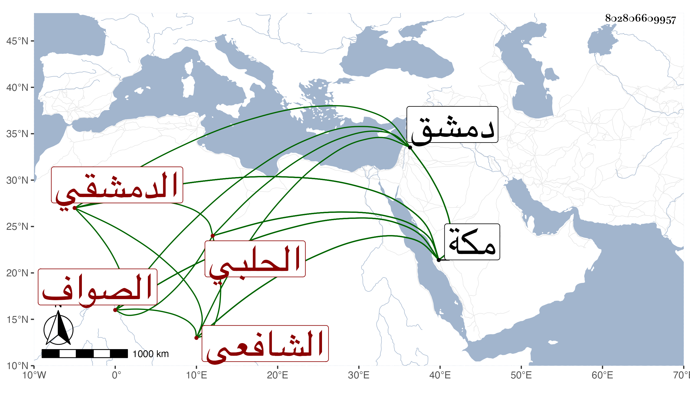

0902Sakhawi.DawLamic.ITO20230111-ara1.EIS1600.802806609957
Biography ID: 802806609957
264
عمر بن أبي بكر بن محمد بن عثمان الزين الحلبي الأصل الدمشقي الشافعي العبيي الصواف نزيل مكة ووالد أبي بكر ويعرف في بلده بابن عثمان . قدم مكة قريبا من سنة ثمانين فقطنها مكتسبا من عمل العبي على طريقة جميلة في الخير وانتفع وتردد إلي وأنا بمكة في المجاورتين اللتين بعد الثمانين بل سمع علي البخاري بقراءة ولده وغيره ، وهو إنسان خير نير ضيق الحال وذكر لي أن والده كان إمام المصلى بدمشق عالما صالحا من رفقاء الشهاب بل قرأ وأنه كان ينسج الحرير وعنده صناع فأشار عليه التقي الحصني بالصوف .
